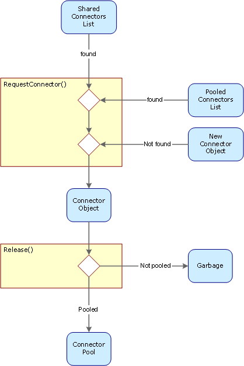

| ← ??? | Up | Connector Pool → |
Last update: 2002-06-18 01:48:00 by usp • Category: Internal documentation • Intended Audience: Application Developers, Npgsql Developers
This document provides an overview over the connection pooling, the concepts and implementation.
Establishing a connection to a database requires a considerable amount of ressources on the server: A new TCP/IP connection has to be established, and PostgreSQL forks a new backend process for each physical connection. In applications written in a traditional client-server style this was not a problem, because connecting and disconnecting was relatively infrequent, typically at application start and termination.
Unfortuantely the disconnected paradigm of ADO.NET introduces serious performance drawbacks, since such applications open a new connection, doing a little piece of work and then close the connection immediately. As this results in a drastically increase of connecting/disconnecting, ADO.NET applications encounter a serious performance drawback if operating on a database backend which is not prepared for this behaviour.
The Npgsql Data Provider addresses this issue on the client side with the introduction of pooled and shared connections.
When an ADO.NET application closes a connection, the physical connection is held open and added to a pool of readily available connections for later reuse. The pool is administered by a pool manager. The next time the application requests a new connection, the pool manager searches the pool for a held connection with a matching connection string. If no suitable one was found, then the pool manager opens a new physical connection and returns it to the application.
To support applications written in the traditional client-server style, Npgsql offers the facility of shared connections. That is in short, one physical connection can be shared by multiple logical connection objects inside the application. The goal is to reduce the number of concurrent open connections to the database server.
Implementing the connection sharing in the data provider releafs the application designer from dealing with central connection management and implementing connection sharing himself. He or she can write in a more modular style, where objects or forms contain and encapsulate their own data access. This enables for smaller module interfaces and thus increase the ability for module reuse.
Connection pooling and sharing is implemented in a way so that an application designer will not have to worry about these things: Pooling is on by default, and sharing is off. The following sections describe what is going on under the hood regarding the shared and pooled properties.
Connection pooling/sharing introduces a differentiation of logical and physical connections into an application. The logical connections the app deals with is represented and managed by the well known Connection objects, while the physical connection is encapsulated by the Connector class.
The Connector object handles opening and closing of the physical connection and controls the core communication with the database server. Sharing and pooling is controlled by a central connector pool manager in a transparent way, so that the application designer does not have to deal with this.
The Connection object deals with Connectors using 3 properties and methods:
In future releases there will be additional properties, for example for lifetime controlling, but these are not necessary to understand the design principles.
When the application calls the Connection.Open() method, the connection object calls the ConnectorPoolMgr.RequestConnector() method and passes the connection string and a boolean flag which indicates whether the application wants the connection to be shared, or not.
The ConnectorPoolMgr searches his internal shared and pooled connectors lists in order to find one with a matching connection string. If there is no matching connectors, a new one is created and handed back to the requesting Connector object.
If the application is done with the connection, it calls the connections Close() method. Then the connector is handed back to the connector pool manager by a call to it's Release() method. Depending on the connector's Shared and Pooled properties the connector is left in the shared connectors list, moved in the pooled connectors list or handed over to the garbage collection for destruction. This is discussed in detail in the ConnectorPool class source code documentation.
The following figure illustrates the life cyle of a connector object.
Inpired by Dave Page
If the application opens a new connection via Connection.Open(), it should be able to assume the logical connection to be in a well defined and clean state. This is accomplished by the connector object's Reset() method, which issues a RESET ALL command to the database backend. The method is called by the connector pool manager before the connector is returned to the connection object.
Inspired by Dave Page
Due to the fact that multiple connection objects share a single physical connection through the means of a single connector object, there may arise some courious behaviour regarding transaction processing.
Transactions are controlled and coordinated by a physical connection (sometimes referred to as session). If an application uses transactions in various places on a single shared connection, these trancations may interact in an unexpected way, if not carefully designed. If an application designer is not shure, he should use an exclusive connection for updates instead of a shared one. This is the default behaviour.
It is safe to use a shared connection, if...
To illustrate this assume on a button click event ("Edit") a Begin Transaction is executed. Then the user normally edits the form, and in another button click eventhandler ("Update") the changes are transmitted to the server, and then a Commint Transaction is executed. This is not safe, because the user might change to a different form and start a new transaction there before hitting "Update" or "Cancel".
The safe version would be to begin the transaction in the "Update" button click event handler, transmit the changes to the server and then committing the transaction immediately.
Note: Connection sharing is normally not needed in an ADO.NET application, since a DataAdapter opens and closes a connection as needed. This behaviour has exactly the same effect as sharing the connection. See the DataAdatper's Fill() method for details.
There are situations when a client must gain exclusive access to a database. Connection pooling adds an extra obstacle to this task, as the physical connections are held open by the connector pool. In practice this means the user has to manually terminate all open applications which have at minimum once connected to that database. This may introduce a certain inconvenience to the user. And if there are applications spread over different workstations in the LAN, this could easily get quite an entertaining task! But the Npgsql Data Provicer implements a means which eases the situation:
When a connector establishes a physical connection to it's database, it issues a LISTEN() command to the database server, with the topic "DatabaseNameXRQ", where DatabaseName equals to the name of the database it is connected to. The XRQ stands for exclusive request. If there is a client somewhere in the LAN that wants exclusive access to a specific database, it issues a NOTIFY() command with a suitable topic name. This will get the database backend send a notification message to each client which has subsribed previously to that topic.
The receiving connector object reacts on this message with terminating and closing it's physical connection, but only if the connector is currently in the state "pooled", i.e. unused by the application. Then the connector removes itself from the pooled connectors list, thereby transfering itself to the system's garbage collection.
This feature eliminates the need for manually shutting down every database application in the LAN, and if all applications adhere to the disconnected paramdigm, there will be a good chance for an application to get exclusive access to a database.
Isolating the physical connection handling in the connector class provides a good commencement point for the implemention of alternatives to tcp/ip, for example the lightweight NetBIOS protocol, Remote Procedure Call RPC, Named Pipes or proprietary protocols.
This is currently not indented, but it may change in the future. Steps for this procedure are:
The various connector types are handled by connector pool manager and connection object through their uniform Connector base class interface, so the surrounding logic will not be affected by the migration.
This approach keeps Npgsql open for future developement.